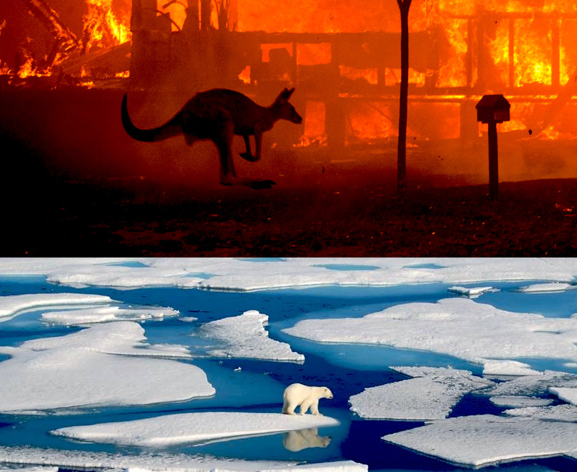
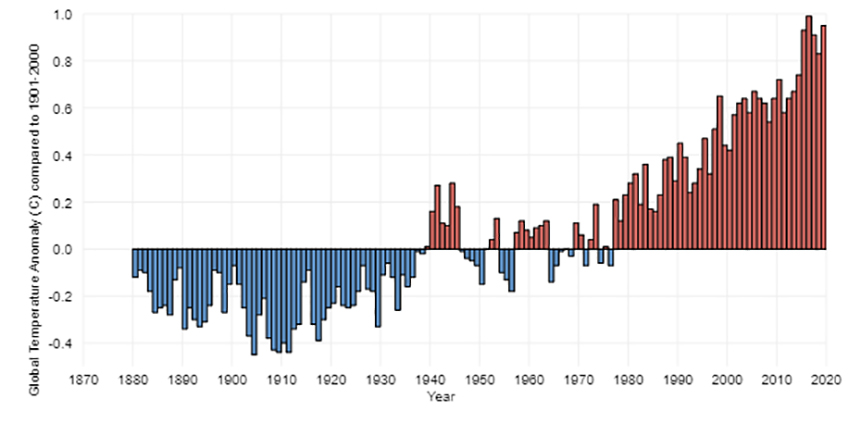
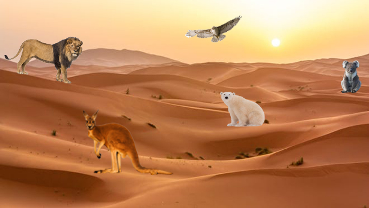
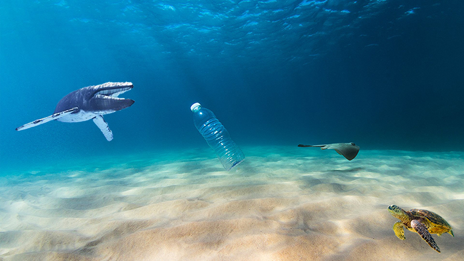

Climate has been changing alot over the past years and affecting animals and their living environment they are living. Their homes and themselves are in danger. If we don't do something they will lose their homes and will have to find another place. Animals would have an impact on what they have to get use to if we don't help them.

Climate change is a long-term shift in global or regional climate patterns.It could be a change in a place's usual temperature for a month or season. Climate change is a change for the Earth and the weather can change in just a few hours. Climate can take hundreds or millions of years. Often climate change refers specifically to the rise in global temperatures from the mid-20th century to present.

We can see that in this chart since 1880-2020 it has increased so much. Which is showing it has not decrese at all. It dannger to us and animals.
Animals are be affected by the warm climate. It's affecting them by mirating somewhere else. It can be difficult since many animals moving to the same place they will be competeing for the same food and meeting animals they have never seen before.Other species may not be able to migrate due to geographical obstructions or man-made barriers such as cities or highways.

This would be really difficult not just for the animals but for us too. Animals help us with the ecosystem, every animals has their own role. If a species does not exist anymore it can unbalance which is why we should help animals protect their home and stop climate change.

Encouraging peeople not to throw plastic the ocean because it can harm the animals in the ocean. If a sea creature gets stuck in a plastic they do not have a way out of the plastic. So they the plastic wrapped around their body and they can't do anything to get out of the plastic. People should be mindful about the creatures that live in the water even if we consider them dangerous although some are not. We should protect animals that live in land and in water.